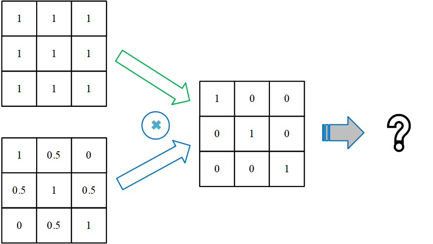

机器学习与数据挖掘
(Machine Learning and Data Mining)
概念
| Machine Learning | Statistics |
|---|---|
| 网络、图 | 模型 |
| 权重 | 参数 |
| 学习 | 拟合 |
| 监督学习 | 回归/分类 |
| 无监督学习 | 密度估计、聚类 |
parametric model: fixed number of parameters.
nonparametric model: the number of parameters grow with the amount of training data.
监督学习
分类
$$ \newcommand{\bm}[1]{\boldsymbol{#1}} \newcommand{\b}[1]{\bold{#1}} \newcommand{\t}[1]{{#1}^{\top}} \newcommand{\l}{\left} \newcommand{\r}{\right} \bm{x}\rightarrow y\in{1,\cdots,C} $$
$C=2$：二分类（binary classification）；
$C>2$：多分类（multi-class classification with a single output）；
多重二元分类（multi-label classification）：标签不互斥。
Function Approximation
未知分类函数（hypothesis）：$y=h(\bm{x})$。
目标：根据训练集估计分类函数$\hat{y}=\hat{h}(\bm{x})$。
预测：使用估计函数计算新数据的分类。
经验风险最小化
Empirical risk minimization
损失函数（loss function）
$$ l(\hat{y},y)=l(h(x),y) $$
L2范数是常用于损失函数，即：$l(\hat{y},y)=|h(x)-y|^2$
期望风险
$$
R(h)=\b{E}\left[l(h(x),y\right]=\begin{cases}
\int\limits_{x\in\mathcal{D}}{l(h(x),y)\mathrm{d}P(x,y)}(连续变量)\
\sum\limits_{x\in\mathcal{D}}{l(h(x),y)P(x,y)}(离散变量)
\end{cases}
$$
目标：求最优预测模型（函数$h^$），使得期望风险最小： $$ h^=\mathop{\mathrm{argmax}}_{h\in\mathcal{H}}{R(h)} $$
由于联合分布$P(x,y)$通常未知使得$R(h)$无法计算，因此使用训练集上的经验风险作为近似： $$ R_{\mathrm{emp}}(h)=\frac{1}{n}\sum_{i=1}^n{l(h(x_i),y_i)} $$ 即优化目标为最小化经验风险 $$ \hat{h}=\mathop{\mathrm{argmin}}{h\in\mathcal{H}}{R{\mathrm{emp}}(h)} $$
概率预测（Probabilistic Predictions）
使用概率作为估计分类函数的输出，以应对模糊的情况。
给定训练集$\mathcal{D}$和输入数据$\bm{x}$，可以表示关于各个分类标签的条件概率$p(y|\bm{x},\mathcal{D})$（使用的预测模型$M$也是条件之一，没有对比模型的情况下省略）。
分类函数：MAP (maximum a posteriori，最大后验概率) 估计，选择最大可能的类别。 $$ \hat{y}=\hat{h}(\boldsymbol{x})=\mathop{\mathrm{argmax}}_{c=1}^C{p(y=c|\boldsymbol{x},\mathcal{D})} $$
无监督学习
发现数据中结构（知识发现）。
目标：估计数据的概率密度分布$p(\bm{x}_i|\bm{\theta})$，其中$\bm{x}_i$ 为数据特征组成的向量，$\bm{\theta}$为数据采样空间的参数，因此这是一个多维概率模型。
半监督学习（Semi-supervised Learning）
强化学习
迁移学习
领域（domain）
$$ \mathcal{D}={\mathcal{X},P(\boldsymbol{x})},~\boldsymbol{x}\in\mathcal{X} $$ $\mathcal{X}$为特征空间，$P(\bm{x})$为边缘概率分布。领域不同$\mathcal{D}_s\ne \mathcal{D}_t$意味着特征空间不同$\mathcal{X}_s\ne \mathcal{X}_t$或边缘分布不同$P_s(x)\ne P_t(x)$。
任务（Task）
$$ \mathcal{T}={\mathcal{Y},P(y|\boldsymbol{x})} $$ $\mathcal{Y}$为类别空间，$P(y|\bm{x})$为预测模型（条件概率分布）。任务不同$\mathcal{T}_s\ne \mathcal{T}_t$意味着类别空间不同$\mathcal{Y}_s\ne \mathcal{Y}_t$或预测模型不同$P_s(Y|X)\ne P_t(Y|X)$。
给定辅助领域的标注数据$\mathcal{D}_s$和学习任务$\mathcal{T}_s$，目标领域的无标数据$\mathcal{D}_t$和学习任务$\mathcal{T}_t$，迁移学习是在$\mathcal{D}_s\ne \mathcal{D}_t$或$\mathcal{T}_s\ne \mathcal{T}_t$的情况下，==降低预测模型$P_t(y|\bm{x})$的误差==。
分类

在异构特征空间进行迁移学习，通常==必须依赖领域特定的先验知识==，包括特征空间之间的关联关系（如双语词典）、多模数据每个视图之间的对应关系（如网页中的文本和图像）或社交关联关系。
无监督迁移学习：目标领域没有标注数据的迁移学习任务。
-
异构特征空间迁移学习：特征空间不同，类别空间相同。
- 将辅助领域映射（翻译）到目标领域，转换为同构迁移学习问题；
- 跨语言文本分类：给定标签时词翻译条件概率由双语字典、辅助领域数据、目标领域数据的期望最大化算法协同学习得到。
Shi L, Mihalcea R, Tian M. Cross language text classification by model translation and Semi-Supervised learning. Proceedings of the 2010 Conference on Empirical Methods in Natural Language Processing, 2010.
- 跨语言文本分类：给定标签时词翻译条件概率由双语字典、辅助领域数据、目标领域数据的期望最大化算法协同学习得到。
- 将辅助领域和目标领域映射到同一个抽象空间；
- 翻译学习：
- 文本到图像间的知识迁移方法
Zhu Y, Chen Y, Lu Z, et al. Heterogeneous Transfer Learning for Image Classification. Proceedings of the 25th AAAI Conference on Artificial Intelligence, 2011.
- **异构领域适配：基于特征对齐、 扩充和支持向量机的通用异构迁移学习方法
Li W, Duan L, Xu D, et al. Learning with Augmented Features for Supervised and Semi-supervised Heterogeneous Domain Adaptation. IEEE Transactions on Pattern Analysis and Machine Intelligence, 2014, 99(PrePrints).
- 将辅助领域映射（翻译）到目标领域，转换为同构迁移学习问题；
-
异构类别空间迁移学习：
-
同构迁移学习：特征空间和类别空间相同。
-
数据集偏移：边缘概率分布和条件概率分布不同
-
实例权重法：对辅助领域中的实例进行权重调整、提升位 于目标领域高密度区域的辅助领域实例权重，从而更好地与目标领域数据分布匹配。
Bickel S, Bruckner M, Scheffer T. Discriminative learning for differing training and test distributions. Proceedings of the 24th international conference on Machine learning, 2007.
-
特征表示法：找到原始数据的新特征表示，使得辅助领域和目标领域的数 据分布更加相似、或使得领域相关的具体特征可以被领域无关的抽象特征所表示。
Zhong E, Fan W, Peng J, et al. Cross Domain Distribution Adaptation via Kernel Mapping. Proceedings of the 15th ACM SIGKDD International Conference on Knowledge Discovery and Data Mining, 2009.
- 隐含表征学习法通过分析辅助领域和目标领域的大量无标样例来构建抽象特征表 示，从而隐式地缩小领域间的分布差异
- 结构对应学习
- 概率分布适配法通过惩罚或移除在领域间统计可变的特征、或通过学习子空间嵌入表示来最小化特定距离函数，从而显式地提升辅助领域和目标领域的样本分布相似度。
- 隐含表征学习法通过分析辅助领域和目标领域的大量无标样例来构建抽象特征表 示，从而隐式地缩小领域间的分布差异
要求目标领域存在少量标注数据。
-
-
领域适配
-
多任务学习
-
性能度量（Performance Metrics）

准确率（Accuracy）
$$ \mathrm{Accuracy}=\frac{\mathrm{True Predict}}{\mathrm{Total}}=\frac{TP+TN}{TP+TN+FP+FN}\notag $$
检出率（Recall）
Detection Rate：正确预测正例与真实正例数量之比（反映漏报与正确预报之比）： $$ \mathrm{Recall}=\frac{\mathrm{True Positive}}{\mathrm{TotalActualPositive}}=\frac{TP}{TP+FN}=\frac{1}{1+\frac{FN}{FP}}\notag $$
精度（Precision）
正确预测正例与所有预测正例数量之比（反映误报与正确预报之比）： $$ \mathrm{Precision}=\frac{\mathrm{True Positive}}{\mathrm{TotalPredictPositive}}=\frac{TP}{TP+FP}=\frac{1}{1+\frac{FP}{TP}}\notag $$
当正样本数非常少时，召回率和精度可以更加准确反映模型的有效性。
F1
$$ \begin{align} \mathrm{F1}&=2\times\frac{\mathrm{Precision}\times\mathrm{Recall}}{\mathrm{Precision}+\mathrm{Recall}}\notag\ \mathrm{F_{\beta}}&=(1+{\beta}^2)\times\frac{\mathrm{Precision}\times\mathrm{Recall}}{({\beta}^2\mathrm{Precision})+\mathrm{Recall}}\notag \end{align} $$
ROC curve and AUC: Area Under the ROC Curve
可解释性
z-score：数据标准化，检查特征偏离中心的程度。
概率模型
对于观测的随机变量$X$而言，
-
先验（prior）概率：$p(X)$，未知其他信息的情况下的概率信息；
-
后验（posterior）概率：$p(X|Y=y)$，已知额外信息的情况下的概条件率信息
-
似然（likelihood）函数：$X=x$发生在条件$Y$下的可能性$p(Y|X=x)$，对应后验概率。
贝叶斯定理： $$ p(X|Y)=\frac{p(X,Y)}{p(Y)}=\frac{p(Y|X)p(X)}{p(Y)}\propto p(Y|X)p(X) $$
参数估计
最大似然
maximum likelihood estimation (MLE)：使事件$X=x$（样本）的似然函数最大的参数估计： $$ \hat{\boldsymbol{\theta}}=\mathop{\mathrm{argmax}}_{\boldsymbol{\theta}}{p(X=x|\boldsymbol{\theta})} $$
最小二乘
最小化观测值与模型预测值的残差。
当模型是高斯分布时，最大似然估计和最小二乘估计是等价的。
$$ \begin{align*} \min {|A\bm{x}-\bm{b}|^2} & \Longrightarrow f(\bm{x})=\bm{x}^\top A^\top A\bm{x}-2\bm{b}^\top A\bm{x} + \bm{b}^\top\bm{b} \Longrightarrow \frac{\mathrm{d}f}{\mathrm{d}\bm{x}}=2A^\top A\bm{x}- 2A^\top\bm{b}=0\ &\Longrightarrow \bm{x}^{\ast}=(A^\top A)^{-1}A^\top\bm{b} \end{align*} $$
通常$A$的行数远大于列数，$A^\top A$为可逆矩阵。
线性回归
对于线性模型拟合：$y=\bm{w}^\top \bm{x} + b$，有 $$ \begin{align*} l(\bm{w},b)&=|\bm{x}_i^\top\bm{w}+b-\bm{y}_i|^2 \ &\Longrightarrow \bm{x}_i^\top\bm{w}+b-\bm{y}_i= [\bm{x}_i^\top,1]\left[\begin{array}{c} \bm{w}\b \end{array}\right]-y_i \end{align*} $$ 考虑所有样本可得：$l(\bm{w},b)=|\hat{X}\hat{\bm{w}}-\bm{y}|^2$，其中$\hat{X}=(X^\top,\b{1}),~\hat{\bm{w}}=(\bm{w}^\top,b)^\top,$
最小均方误差
贝叶斯推理（Bayesian Inference）
最大后验概率
$$ \begin{align} \hat{\boldsymbol{\theta}}&=\mathop{\mathrm{argmax}}{\boldsymbol{\theta}}{p(\boldsymbol{\theta}|X=x)}\notag\ &=\mathop{\mathrm{argmax}}{\boldsymbol{\theta}}{p(X=x|\boldsymbol{\theta})p(\boldsymbol{\theta})}\notag\ &=\mathop{\mathrm{argmax}}_{\boldsymbol{\theta}}{\left{\log{p(X=x|\boldsymbol{\theta})}+\log{p(\boldsymbol{\theta})}\right}} \end{align} $$
设$h$为假设采样空间，$\mathcal{D}$为样本集合： $$ \begin{align} \hat{h}^{MAP}&=\mathop{\mathrm{argmax}}_h{p(\mathcal{D|h})p(h)}\notag\ &=\mathop{\mathrm{argmax}}_h{\log{p(\mathcal{D|h})}+\log{p(h)}} \end{align} $$ {eq_bayes_map}
For example, if we assume the prior distribution to be Gaussian, MAP is equal to MLE with L2 regularization; if we assume the prior distribution to be Laplace, MAP is equal to MLE with L1 regularization.
当样本点足够多时，数据提供的信息将淹没先验信息（data overwhelms the prior），MAP收敛为最大似然估计（maximum likelihood estimate）。 $$ \hat{h}^{MLE}=\mathop{\mathrm{argmax}}_h{p(\mathcal{D|h})} $$
几何模型
K-Nearest Neighbors
距离度量：$D(x,y)={|x-y|_p}$
多数表决：每个邻居节点的权重可以相同，也可以与距离相关（例如$\frac{1}{d}$）。
比如，我们判断一个人的人品，只需要观察他来往最密切的几个人的人品好坏就可以得出了。
- 分类：训练集里和预测的样本特征最近的$K$个样本，选取样本中的主要类别作为预测。
- 回归：平均法，即最近的$K$个样本的样本输出的平均值作为回归预测值。
参数选择
对于$k$值的选择，没有一个固定的经验，一般根据样本的分布，选择一个较小的值，可以通过交叉验证选择一个合适的$k$值。
距离计算
暴力搜索
计算预测样本与训练集所有样本的距离，找出$k$邻近样本，进行多数表决确定预测样本的类型。
KD树（K-Dimensional Tree）
在训练阶段建立KD树（模型）。
- 计算样本集合各个特征的取值的方差，用方差最大的第$n$维特征$f_n$来作为根节点的划分标准（方差越大，则数据在该维度上更加分散）。
- 将样本按$f_n$划分为两个子集，作为根节点的左右子节点的输入。
- 对于左右子节点，重复上述操作。
搜索临近节点：
球树
参考资料
K-means
对于给定的样本集，按照样本之间的距离大小，将样本集划分为$K$个簇。让簇内的点尽量紧密的连在一起，而让簇间的距离尽量的大。 $$ \begin{align*} E &= \sum_{i=1}^k\sum_{x \in C_i} {|x-\mu_i|}2^2\ \mu_i &= \frac{1}{|C_i|}\sum\limits{x \in C_i}x \end{align*} $$ $k$值的选择：根据对数据的先验经验选择一个合适的$k$值，如果没有什么先验知识，则可以通过交叉验证选择一个合适的$k$值。
选择$k$个初始化的质心：$k$个初始化的质心的位置选择对最后的聚类结果和运行时间都有很大的影响，因此需要选择合适的$k$个质心，最好这些质心不能太近。
优化
K-Means++
优化初始质心的选择。
Mini Batch K-Means
参考资料
谱聚类（Spectral Clustering）
算法
聚类问题：不同分组间的边（相似度）权重较低，而相同分组内节点间的边权重较高。
主要思想：==将数据点映射到相似矩阵的特征向量。==
割图（Graph Cut）
点的聚类近似对应了最小割（min-cut）：即割集（割间的边）的权重之和最小，且割内边权重之和尽可能大。由此得到两种优化目标，即RatioCut和Ncut。
$$ \begin{align*} \mathrm{cut}(A,B)&=\sum_{i\in A,j\in B}{w_{ij}}\ \mathrm{cut}(A_1,A_2,\cdots,A_k)&=\sum_{i=1}^k{\mathrm{cut}(A_i,\bar{A}_i)}\notag \end{align*} $$
平衡性：
RatioCut：使用子集的节点数调整子集的权重。
$$
\mathrm{RatioCut}(A_1,\cdots,A_k) = \sum_1^k{\frac{\mathrm{Cut}(A_i,\hat{A})}{|A_i|}}
$$
对应非规范化的拉普拉斯矩阵$L$。
Ncut：使用子集的边权重调整子集的权重。
$$
\mathrm{Ncut}(A_1,\cdots,A_k) = \sum_1^k{\frac{\mathrm{Cut}(A_i,\hat{A})}{\mathrm{vol}(A_i)}}
$$
对应规范化的拉普拉斯矩阵$L_{\mathrm{rw}}$或$L_{\mathrm{sym}}$。
Logistic Regression
学习框架
AdaBoost
调整训练实例的权重已提升弱学习器的准确率。
应用
分类
Document classification
bag of words: a binary document × word co-occurrence matrix
Image Classification
Object (Face) detection and recognition
回归
Predict tomorrow's stock market price
Predict the location in 3D space of a robot arm end effector
Predict the temperature at any location
聚类（Clustering）
- estimate the distribution over the number of clusters, $p(K|D)$
- estimate which cluster each point belongs to, $z^{*}_i = \mathop{\mathrm{argmax}}_k{p(z_i=k|\bm{x}_i,\mathcal{D})}$, where $z_i$ is hidden or latent variable.
model based clustering: fit a probabilistic model to the data.
Discovering latent factors
Discovering graph structure
measure a set of correlated variables; discover which ones are most correlated with which others. $$ \hat{G}=\mathop{\mathrm{argmax}}{p(G|\mathcal{D})} $$
Matrix Completion
Collaborative filtering
recommendation system
特征选择（Feature Selection）
方法
Naive Bayes（朴素贝叶斯）
基于概率预测实际需要建立$p(y|\bm{x},\mathcal{D})$的模型，根据贝叶斯定理可得， $$ \begin{align} p(y|\boldsymbol{x})&=\frac{p(\boldsymbol{x},y)}{p(\boldsymbol{x})}\notag\ &=\frac{p(\boldsymbol{x}|y)p(y)}{\sum_i{p(\boldsymbol{x}|y=c_i)p(y=c_i)}} \notag\ &\propto p(\boldsymbol{x}|y)p(y) \end{align} $$
分母与$y$无关。
因此需要求出联合概率分布或间接求出类别的先验概率$p(y)$和样本关于类别的条件概率。
朴素贝叶斯方法假设数据服从某种类型的分布，利用样本估计该分布的参数。当获得估计参数后，利用概率模型以及贝叶斯公式即可计算出分类的概率。首先，每个类别的对应参数$\bm{\theta}^c,c=1,...,C$可能不同；其次，给定类别中数据的每个维度对应一组参数$\bm{\theta}^c_{!j}, j=1,...,F$，各组参数可能并非相对独立。为了简化计算，假设数据的各个维度的特征（feature）的条件分布独立（因此参数估计是相互独立的，实际情况并不一定成立，因此朴素）。
设样本点维度为$F$，类别总数为$C$。
单个样本点发生的概率（似然函数）： $$ \begin{align} p(\boldsymbol{x}i,y_i|\boldsymbol{\theta})&=p(\boldsymbol{x}i|y_i,\boldsymbol{\theta})p(y_i|\boldsymbol{\theta})\notag\ &=p(y_i|\boldsymbol{\theta})\prod{c=1}^{C}{p(\boldsymbol{x}i|y_i,\boldsymbol{\theta})^{\mathbb{I}(c=y_i)}}\ &=p(y_i|\boldsymbol{\theta})p(\boldsymbol{x}i|c,\boldsymbol{\theta}^c)|{c=y_i}\ &=p(y_i|\boldsymbol{\pi})p(\boldsymbol{x}i|\boldsymbol{\theta}^c)|{c=y_i}\ &=p(y_i|\boldsymbol{\pi})\prod{j=1}^{F}{p(x{ij}|\boldsymbol{\theta}^c_{!j})|_{c=y_i}} \end{align} $$
其中$\bm{\pi}=(\pi_c)|_{c=1,...,C}$为标签$y$的概率分布。由于样本点已知其分类，因此仅考虑其对应分类的概率$p(\bm{x}_i|y_i=c,\bm{\theta})\ne0$。由于参数独立，因此在计算条件概率时，条件只包含样本点所属类别对应特征维度的参数。
样本集合发生的概率为各个样本点发生的联合概率（认为各个点相互独立） $$ \begin{align} p(\mathcal{D}|\boldsymbol{\theta})&=\prod_{i=1}^D{\left{p(y_i|\boldsymbol{\pi})\prod_{j=1}^F{p(\boldsymbol{x}{ij}|\boldsymbol{\theta}{!j}^c)|{c=y_j}}\right}}\notag\ &=\prod{i=1}^D{p(y_i|\boldsymbol{\pi})}\prod_{i=1}^D{\prod_{j=1}^F{p(\boldsymbol{x}{ij}|\boldsymbol{\theta}{!j}^c)|{c=y_j}}}\ \log{p(\mathcal{D}|\boldsymbol{\theta})}&=\sum{i=1}^{D}{\log{p(y_i|\boldsymbol{\pi})}}+\sum_{i=1}^D{\sum_{j=1}^F{\log{p(\boldsymbol{x}{ij}|\boldsymbol{\theta^c{!j}})|{c=y_i}}}}\notag\ &=\sum{i=1}^C{N_c\log{\pi_c}}+\sum_{i=1}^D{\sum_{j=1}^F{\log{p(\boldsymbol{x}{ij}|\boldsymbol{\theta^c{!j}})|_{c=y_i}}}} \end{align} $$
其中$\N_c$表示所有$D$个样本点中类别为$c$的数量（对应的概率为$\pi_c$）。
采用最大似然估计，则是要使（对数）似然函数在考察参数条件下最大化， $$ \begin{align} \mathop{\mathrm{argmax}}\boldsymbol{\theta}~&{\log{p(\mathcal{D}|\boldsymbol{\theta})}},\ \mathrm{s.t.~~~} &\sum{c=1}^C{\pi_c}=1. \notag \end{align} $$
Gaussian Naive Bayes
连续数据，假设数据的每一个特征服从一个正态分布，
$$ p(\boldsymbol{x}|y=c,\boldsymbol{\theta})=\prod_{j=1}^D\mathcal{N}(x_j|\mu_{!j}^c,{{\sigma}_{!j}^c}^2) $$
估计分布的期望和方差。
Bernoulli Naive Bayes
特征的值由两个取值（0和1），采用伯努利分布$p(\bm{x}|y=c,\bm{\theta})=\prod_{j=1}^D\mathrm{Ber}(x_j|{\mu}_{!j}^c)$，估计每个特征的分布的期望${\mu}_j^c$（即$x=1$的概率）。
Multinomial Naive Bayes
特征可以取多个离散值，在二值基础上推广。
模型拟合
神经网络
A neural network is a very powerful machine learning mechanism which basically mimics how a human brain learns. The brain receives the stimulus from the outside world, does the processing on the input, and then generates the output.

激活函数（Activation Function）

单个神经元：输入$\bm{x}=(x_i){i=1,\cdots,n}$，神经元输入权重$W_i=(w_i){i=1,\cdots,n}$， $$ \begin{align*} y_j&=f(b+\sum_{i=1}^{n}{x_iw_i})=f(W_i\bm{x}+b),\ z_j&= b_j+W_i\bm{x} \Longrightarrow y_j=f(z_j) \end{align*} $$
A neural network without an activation function is essentially just a linear regression model.
单层网络：第$k$层神经元序列$\bm{q}^{(k)}=(q_j^{(k)}=(f_j^{(k)},b_j^{(k)})){j=1,\cdots,m}$，$\bm{f}^{(k)}=(f_j^{(k)}){j=1,\cdots,m}, \bm{b}^{(k)}=(b_j^{(k)})_{j=1,\cdots,m}$。每个神经元的激活函数分别处理一个线性组合输入$z_j$。
可以将各层网络的处理写作迭代的形式： $$ \begin{align*} \bm{q}^{(k+1)}(\bm{x}^{(k)})&=\begin{cases} \bm{z}^{(k+1)}=\bm{b}^{(k+1)}+\bm{W}^{(k+1)}\bm{x}^{(k)} \ \bm{x}^{(k+1)}=\bm{f}^{(k)}(\bm{z}^{(k+1)}) \end{cases},~~k=1,2,\cdots\ x^{(k+1)}_j&=f_j^{(k)}(z^{(k+1)}_j) \end{align*} $$
通常每一层使用相同类型的神经元，即激活函数相同$f_j^{(k)}=f^{(k)}$。
Sigmoid
$$ f(x)=\frac{1}{1+e^{-x}} $$
This means that in this range small changes in x would also bring about large changes in the value of Y. So the function essentially tries to push the Y values towards the extremes. This is a very desirable quality when we are trying to classify the values to a particular class.
Problem:
- when $x$ is large, the gradient is approaching to zero and the network is not really learning.
Tanh - Scaled Sigmoid
$$ \begin{align} \mathrm{tanh}(x)&=2\mathrm{sigmoid}(2x)-1 \notag\ & =\frac{2}{1+e^{-2x}} -1 \end{align} $$
it ranges from -1 to 1.
ReLU
$$ f(x)=\mathrm{max}(0,x) $$
The main advantage of using the ReLU function over other activation functions is that it does not activate all the neurons at the same time.
Problems: gradients moving towards zero.
Solution:
- Leaky ReLU.
$$ f(x)=\begin{cases} ax, & x< 0 \ x, & x \ge 0 \end{cases} ~~(a\rightarrow0^+) $$
- Parameterized ReLU function
Softmax
$$ \boldsymbol{\sigma}(\boldsymbol{z})j=\frac{e^{z_j}}{\sum{k=1}^{K}{e^{z_k}}},~\forall j=1,\cdots,K. $$
==Multi-class problem==: the softmax function would squeeze the outputs for each class between 0 and 1 and would also divide by the sum of the outputs. This essentially gives the probability of the input being in a particular class.
- Sigmoid functions and their combinations generally work better in the case of classifiers
- Sigmoids and tanh functions are sometimes avoided due to the vanishing gradient problem
- ReLU function is a general activation function and is used in most cases these days
- If we encounter a case of dead neurons in our networks the leaky ReLU function is the best choice
- Always keep in mind that ReLU function should only be used in the hidden layers ???
- As a rule of thumb, you can begin with using ReLU function and then move over to other activation functions in case ReLU doesn’t provide with optimum results
https://www.analyticsvidhya.com/blog/2017/10/fundamentals-deep-learning-activation-functions-when-to-use-them/
The Neural Network Zoo - The Asimov Institute

Feed-forward Neural Network
感知器（Perceptron）
单层感知器仅能学习线性可分模式。
https://www.simplilearn.com/what-is-perceptron-tutorial
Multi-Layer Perceptrons (MLPs)
线性神经网络
感知器传输函数是一个二值阈值元件，而线性神经网络的传输函数是线性的。这就决定了感知器只能做简单的分类，而线性神经网络还可以实现==线性==拟合或逼近。
非线性神经网络
要形成非线性分界面，网状结构和非线性激活函数缺一不可。如果缺乏网状结构（逻辑回归），$\bm{x}$经过投影其信息只在 $W$方向上有变化。若缺乏非线性激活函数，则无论有多少层，网络仍然是一个线性回归。

优化神经网络：调整网络中的参数$W,b$，以最小化损失函数。
参考文献
- https://www.learnopencv.com/understanding-feedforward-neural-networks/
- https://www.analyticsvidhya.com/blog/2018/07/using-power-deep-learning-cyber-security/
卷积神经网络CNN
CNNs specifically are inspired by the biological visual cortex1.
In this experiment, the researchers showed that some individual neurons in the brain activated or fired only in the presence of edges of a particular orientation like vertical or horizontal edges. Hubel and Wiesel found that all of these neurons were well ordered in a columnar fashion and that together they were able to produce visual perception.


层间特征的映射关系不是通过全连接，而是局部卷积构造。
preprocessing: 降采样
convolution
提取局部特征（模式）。
卷积核模式匹配无法区分以下模式：设计不同的卷积核可区分以上两种模式，从而避免额外的归一化操作。

每一个kernel在一张图上通过卷积运算生成一个feature map（每个卷积核代表了一种图像模式），输入图像本身也相当于一个kernel map（对于RGB图像，每个图像对应三个输入通道，相当于有三个kernel map）。每个输入图像使用同一组卷积核分别进行计算，因此输出feature map数量：n_input_map*n_kenerls_per_map；
输出数据的形状：n_input_map*n_kernels_per_map*(n_rows*n_cols)；
因此每层参数数量：(n_input_map*kernel_size+1)*n_kernels_per_map，每个卷积核对应一个权重系数矩阵和一个bias参数（$y_{ij}=\boldsymbol{wx}_{ij}+b$）。对于输入层，num_input_map=1（对于RGB图像，num_input_map=3，因此输入层需要三个二维卷积核分别对三个通道进行卷积并将结果求和（Keras的Conv2D）。
bias：单个输入图上的卷积核使用独立的bias，但这些bias跨feature map是共享的参数，因此偏置参数的个数为
n_kenerls_per_map。（==同一层卷积核在不同feature map是独立的，但偏置是共享的？==）
==卷积计算实际是权重与数据的内积。卷积核的移动过程类比于数字信号处理中的卷积运算过程==。卷积计算可在feature_map内部（复制image数据）以及feature_map之间并行。
dot product between their weights (kernel) and a small receptive field to which they are connected to in the input volume.
subsampling: 降低分辨率
有助于==减小过拟合==。
-
max-pooling: takes the largest value from the window of the image currently covered by the kernel of the pooling layer.
卷积运算的值越大，意味着对应位置的模式与卷积核越匹配。因此，通过
max-pooling运算后，卷积运算提取的模式信息仍能在feature_map中得到保留。池化层窗口移动步长为窗口宽度。
-
full connected layers: 类似传统神经网络的部分
全连接层
将feature maps转换为1维向量，从而可用于输出层的softmax分类器或sigmoid进行预测。
损失函数
损失函数以神经网络的输出作为自变量，以训练数据集的标签作为参数。
binary_crossentropy
AutoEncoder
深度学习
- https://www.analyticsvidhya.com/blog/2016/03/introduction-deep-learning-fundamentals-neural-networks/
- https://www.analyticsvidhya.com/blog/2018/05/essentials-of-deep-learning-trudging-into-unsupervised-deep-learning/
Time Series forecasting & modeling
Methods
-
Moving Average
-
Linear Regression
-
k-Nearest Neighbors
-
Auto ARIMA
-
Prophet
-
Long Short Term Memory (LSTM)
-
https://www.analyticsvidhya.com/blog/2018/10/predicting-stock-price-machine-learningnd-deep-learning-techniques-python/
-
https://www.analyticsvidhya.com/blog/2016/02/time-series-forecasting-codes-python/?utm_source=blog&utm_medium=stockmarketpredictionarticle
GAN
https://www.analyticsvidhya.com/blog/2019/04/top-5-interesting-applications-gans-deep-learning/
训练
Model Selection
数据集
training set
validation set
We fit all the models on the training set, and evaluate their performance on the validation set, and pick the best.
cross validation: split the training data into $K$ folds; train on all the folds but the $k$’th, and test on the $k$’th, in a round-robin fashion.
test set
优化理论
梯度搜索算法
Stochastic Gradient Descent
learning of linear classifiers under convex loss functions such as (linear) Support Vector Machines and Logistic Regression.
SGD has been successfully applied to large-scale and sparse machine learning problems often encountered in text classification and natural language processing.
Stochastic Gradient Descent：根据一个样本计算梯度；
Batch Gradient Descent：根据所有样本计算平均梯度（计算所有样本的平均误差，以2范数构造损失函数即为均方误差（MSE））；
mini-batch SGD：计算一批样本的平均梯度（兼顾计算效率与收敛速率）。
参考文献
- https://scikit-learn.org/stable/modules/sgd.html#sgd
- https://adventuresinmachinelearning.com/stochastic-gradient-descent/
ADAM
Back-Propagation

利用链式规则对$W_{ij}^{(k)}$反向逐级求导： $$ \newcommand{\d}[2]{\frac{\partial#1}{\partial#2}} \begin{align*} \d{l}{f_1^{(3)}}&=\dot{l}(u),~~u=f_1^{(3)}-y_1\
\d{l}{w_{11}^{(2)}}&=\d{l}{f_1^{(3)}}\d{f_1^{(3)}}{z_1^{(3)}}\d{z_1^{(3)}}{w_{11}^{(2)}}=\d{l}{f_1^{(3)}}\cdot\dot{f}_1^{(3)}\cdot f_1^{(2)} \end{align*} $$ 其中，通过正向传播并利用初始化的权重系数$W$，可获得各级神经元输入值$z$、激活函数的函数值$f$和导数值$\dot{f}$。
Without the differentiable non linear function, this would not be possible.
类似地对$b_i^{(k)}$求导可得： $$ \d{l}{b_1^{(2)}}=\d{l}{f_1^{(3)}}\d{f_1^{(3)}}{z_1^{(3)}}\d{z_1^{(3)}}{b_1^{(2)}}=\d{l}{f_1^{(3)}}\cdot\dot{f}_1^{(3)}, ~~\left(\d{z_1^{(3)}}{b_1^{(2)}}=1\right)\notag $$
利用后一级已有导数信息，可迅速计算当前层级的导数： $$ \begin{align*} \d{l}{f_{1}^{(2)}}&=\d{l}{f_1^{(3)}}\d{f_1^{(3)}}{z_1^{(3)}}\d{z_1^{(3)}}{f_{1}^{(2)}}=\d{l}{f_1^{(3)}}\cdot\dot{f}1^{(3)}\cdot w{11}^{(2)}\
\d{l}{w_{11}^{(1)}}&=\d{l}{f_1^{(2)}}\d{f_1^{(2)}}{z_1^{(2)}}\d{z_1^{(2)}}{w_{11}^{(1)}}=\d{l}{f_{1}^{(2)}}\cdot\dot{f}1^{(2)}\cdot f{1}^{(1)} \end{align*} $$
$z_1^{(3)}=w_{11}^{(2)}f_1^{(2)}+b_1^{(2)}$，因此对$w_{11}^{(2)}$求导仅与$f_1^{(2)}$相关。
如果存在多个输出，或者较浅的层级在求导时，其前置神经元存在多条路径： $$ \begin{align*} \d{l}{f_{1}^{(1)}}&=\sum_{i=1}^{n_2}\left{\d{l}{f_i^{(2)}}\d{f_i^{(2)}}{z_i^{(2)}}\d{z_i^{(2)}}{f_1^{(1)}}\right}=\sum_{i=1}^{n_2}\left{\d{l}{f_{i}^{(2)}}\cdot\dot{f}i^{(2)}\cdot w{i1}^{(1)}\right}\
\d{l}{w_{12}^{(0)}}&=\d{l}{f_1^{(1)}}\d{f_1^{(1)}}{z_1^{(1)}}\d{z_1^{(1)}}{w_{12}^{(0)}}=\d{l}{f_1^{(1)}}\dot{f}_1^{(1)}\cdot f_2^{(0)} \end{align*} $$
向量化
将各级的函数值、导数值信息表示为向量，并根据各级的维度关系，可以得到各级梯度的向量化表示。 $$ \begin{align*} \bm{d}^{(k)}&=\left(\d{l}{f_{i}^{(2)}}\cdot\dot{f}i^{(k)}\right){i=1,\cdots,n_k},& \bm{f}^{(k)}&=\left(f_i^{(k)}\right)_{i=1,\cdots,n_k},\ \frac{\mathrm{d}l}{\mathrm{d}\bm{f}^{(k)}}&={W^{(k)}}^{\top}\cdot\bm{d}^{(k+1)},& \frac{\mathrm{d}l}{\mathrm{d}\bm{W}^{(k)}}&=\bm{d}^{(k+1)}\cdot{\bm{f}^{(k)}}^{\top}. \end{align*} $$ 基于梯度信息，我们可以利用梯度下降算法进行迭代从而优化神经网络的参数，以最小化训练数据集的损失。
参考文献
- https://towardsdatascience.com/applied-deep-learning-part-1-artificial-neural-networks-d7834f67a4f6
- https://adventuresinmachinelearning.com/neural-networks-tutorial/
开源项目
Generative Models in TensorFlow 2
This repository contains TF implementations of multiple generative models, including:
- Generative Adversarial Networks (GANs)
- Autoencoder
- Variational Autoencoder (VAE)
- VAE-GAN, among others.
STUMPY – Time Series Data Mining
Below are a few time series data mining tasks this matrix profile helps us perform:
- Anomaly discovery
- Semantic segmentation
- Density estimation
- Time series chains (temporally ordered set of subsequence patterns)
- Pattern/motif (approximately repeated subsequences within a longer time series) discovery
Awesome Decision Tree Research Papers
The repository also contains the implementation of each paper.
框架
PyTorch
PyTorch is a Python based scientific computing package that is similar to NumPy, but with the added power of GPUs. It is also a deep learning framework that provides maximum flexibility and speed during implementing and building deep neural network architectures.
- https://www.analyticsvidhya.com/blog/2019/01/guide-pytorch-neural-networks-case-studies/
- Use Case 1: Handwritten Digits Classification (Numerical Data, MLP)
- Use Case 2: Objects Image Classification (Image Data, CNN)
- Use Case 3: Sentiment Text Classification (Text Data, RNN)
- Use Case 4: Image Style Transfer (Transfer Learning)